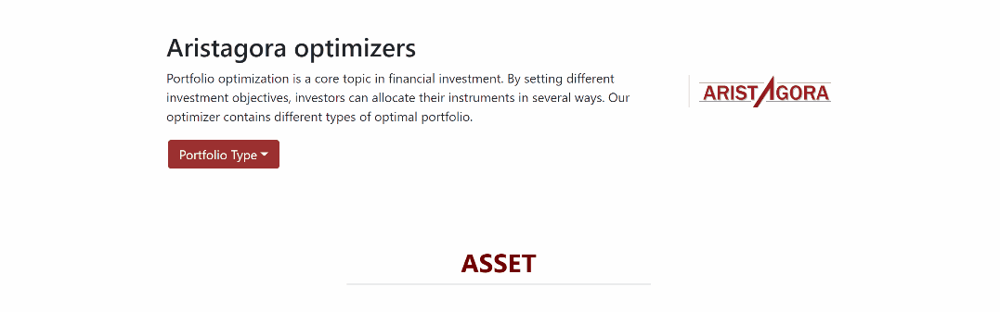
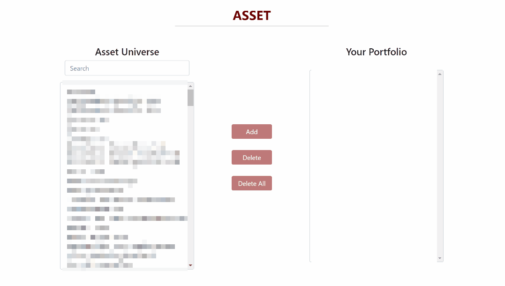
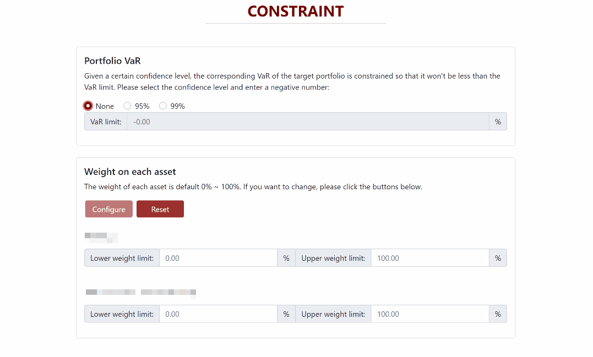
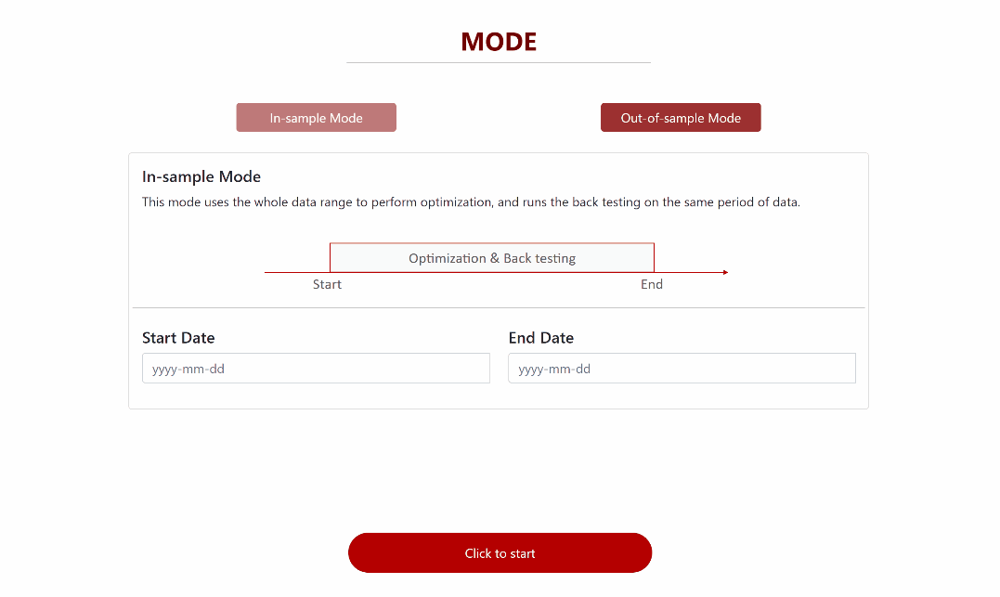
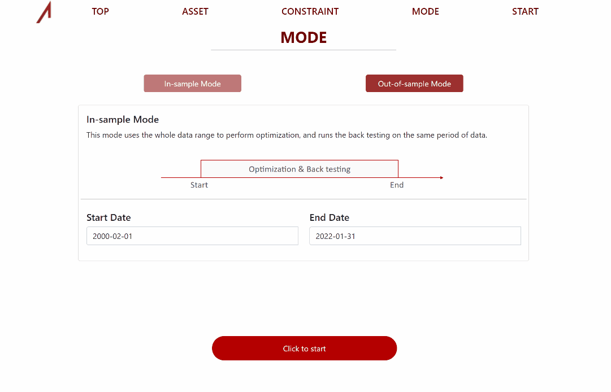
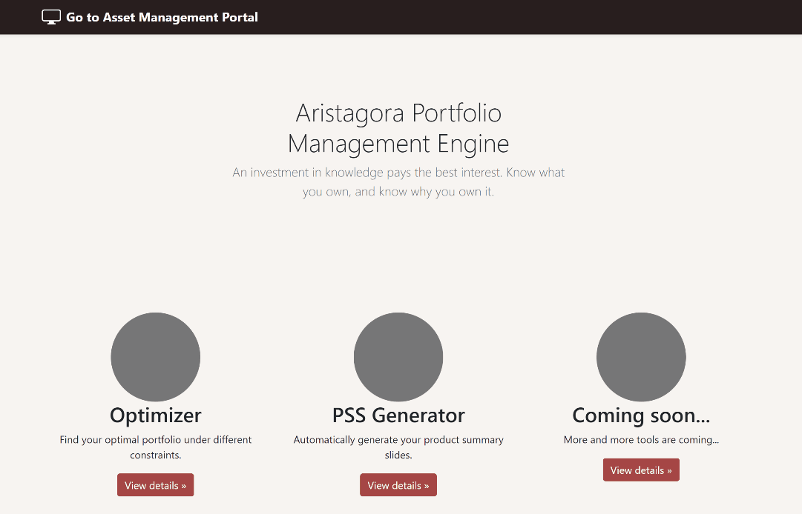
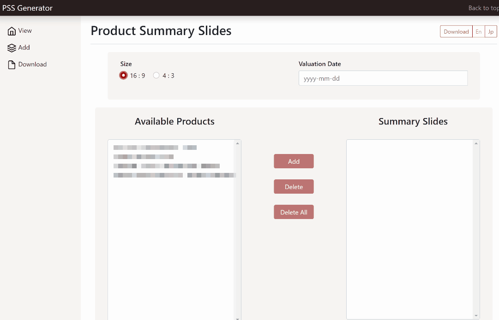
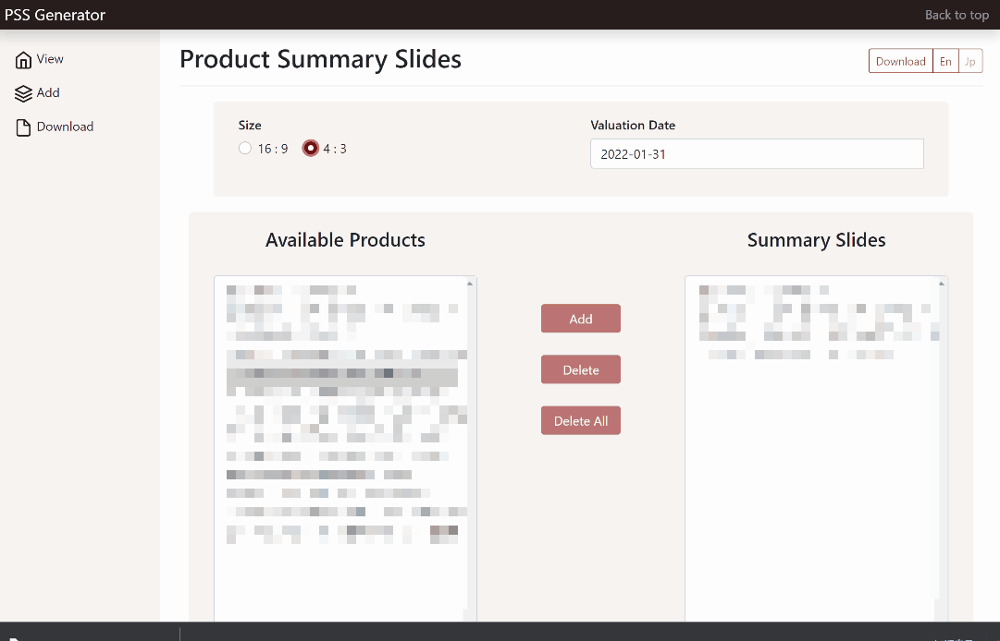

Hello, my name is Diwei Shi,
a quantitative analyst based in Tokyo, Japan.
Thank you for visiting my personal site. This site might contain some point of views with respect to investment. The views expressed are personal and do not represent any research report or any statement made by any institution where I'm working, worked or studied. None of the information contained in this website constitutes investment advice.
Follow me on LinkedIn or click here to view my profile .
Education background
Working Experience
Track record
When working at Aristagora as a quant analyst, I helped the portfolio manager manage 6 FoF portfolios. My track record of the best portfolio, alhough only counts for a small proportion of AUM, reveals a strong performance. A simple review of my track record can be seen below.
| Statistics | Since I joined | Since inception | HFRI FoF (JPY) |
|---|---|---|---|
| Cumulative Return | 25.43% | 50.74% | 48.55% |
| Annualized Return | 18.52% | 7.87% | 7.58% |
| Annualized Volatility | 8.64% | 8.11% | 8.64% |
| Sharpe Ratio | 2.14 | 0.97 | 0.88 |
| Downside Deviation | 2.57% | 4.12% | 5.40% |
| Sortino Ratio | 7.21 | 1.91 | 1.40 |
| Max Drawdown | -2.26% | -9.98% | -10.75% |
| Calmar Ratio | 8.19 | 0.79 | 0.70 |
| MDD Length (month) | 1 | 3 | 18 |
Project: portfolio optimizer
In addition to helping the portfolio manager with quantitative analysis, I also developed some tools to efficiently manage the portfolios. One of my biggest achievements is the portfolio optimizer. Initially introduced by Harry Markowitz in 1952, the Modern Portfolio Theory has contributed significantly to the finance industry both in the academic field and in practice. It provides a mathematical and scientific methodology to the solution of the portfolio selection problem.
I followed the basic Mean-Variance optimization approach but added "VaR constraint" to the whole portfolio and "weight constraints" to each asset. The reason is simply that for a fund of funds, you can not short a hedge fund's product, nor borrow to buy the product easily due to KYC things; besides, you also face the "minimum investment" requirement so that your weight is essentially restricted. Besides, I didn't take rebalancing into account as most hedge funds require a notice period of at least one month so you cannot really do anything on "strategically changing your allocation" and the liquidity of FoF is really low. A demo of how the optimizer works can be seen below.
You can select the type of portfolio you want to optimize.
And you can easily add or delete any asset.
The highlight of the optimizer is that you can set the limit of VaR at the portfolio level and the range of the weight at each fund level.
Last, you need to config the mode. You can choose to optimize the portfolio and run the backtesting on the same range of data. Or split the optimization and backtesting on different ranges of data.
Once you finish your configuration and click the start button, you will get the amazing results
You will go to a dashboard page, where you can see the classical efficient frontier, a backtested NAV curve, a pie chart of optimal weights, performance statistics, and a heatmap of correlation matrix. All of the graphs are interactive. In terms of the backend, I used the Simulated Annealing algorithm to compute the optimal weights.
Project: product summary slides generator
I integrated the generator and optimizer together, so the entrance is the same. This is a simple gif showing how the generator works. It's linked to SQL database and the users can perform basic CRUD functions through the interface. Both English and Japanese versions are available.
If you go to the download tab, you can select the products you want to include. You need to select a value date to which the performance is calculated. Besides, you can choose whether to download as 16:9 size or as 4:3 size. Of couse, the Japanese ver is also available.
Click the download button and wait for a bit while, you will get the styled PowerPoint file. In this file, every page shares the same layout, font, font size, and other customized styles. Previously, my colleagues at sales and operation divisions have to spend tens of hours to make them manually, as updating the performance numbers is quite troublesome and time-consuming. But with this generator, more than 99% of time has been shortened and heavy manual works are replaced by one simple click.
[Updating...]